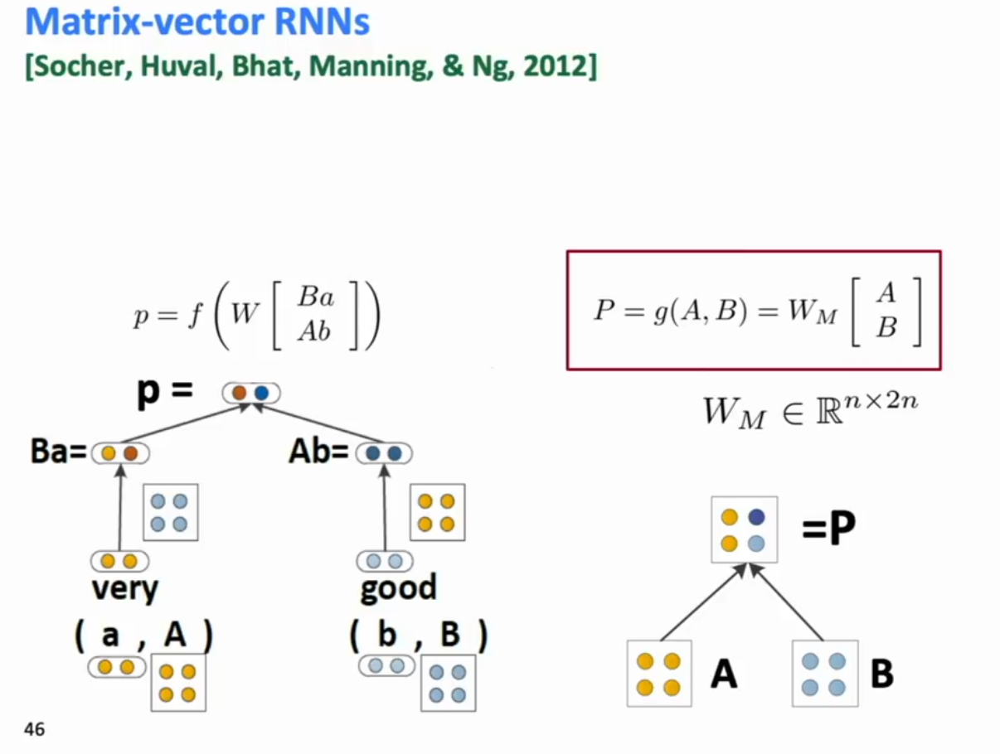

TreeRNNs are hard to scale and don't necessarily work better than LSTMs and Transformers.

Part of the tricks of being a good deep learning researcher is managing to get thigns done and not wasting a ton of time. So train on a smal model firs tand make sure you can overfit on them. Plot your training and dev errors over model iterations.
The spectrum of language in CS.
Semantic Interpretation of Language
Beyond word vectors:
How can we work out the meaning of larger phrases?
The snowboarder is leaping over a mogul.
A person on a snowboard jumps into the air.
In the above phrase, the snowboarder and a person on a snowboard refer to the same thing, but they’re made up of a different number of words (2 vs 5). How can we have a representation that works for variable word lengths? => Recursive TreeRNNs.
We need a way to compose linguistic knowledge from smaller parts. Chomsky argues that the singular innovation that allowed human beings to model langauge is that we could model recursion (putting together bigger things from smaller parts).
We want a method of computing a embedded representation of phrases of any length in a compositional manner.
The meaning (vector) of a sentence is determined by
(1) the meanings of its words and
(2) the rules that combine them
Given some parse of a sentence, learn a vector space representation through compositionality. Run a NN through pairs of words to determine whether to combine them and what the new combined representation should be.
Version 1:
Their first attempt to do this just used a simple one layer NN (Concatenating the embeddings of the two words), and use a greedy parser that uses the NN generated confidences in max-order. (Note adter you do a combination of two words you have to run the new phrase with its adjacent words to get the nexst level confidence)
See Process of Generation in Appendix 1.
They scored the tree by summing the parsing decision scores at each node. They optimized it against a max-margin objective.
Issues:
Because it’s a recursive RNN, the weight vector in the composition is the same for all compositions, in particular, for all syntactic categories. This might be a problem.
Version 2:
A treeRNN with different compsotition (weight) matric for differnet syntactic environments. These syntactic enviornments are given by a (probabilistic) constituency parser.
This model can learn where the important semantics of sentences are. When words are merged, the resultant embedding is more similar to the more important word that was merged.
Version 3:
Compositionality Through Recursive Matrix-Vector Spaces
Proposal: A new composition function where words that act as operators (“very”) are matrices (modifiers) rather than vector.
To be general, each word has both a vector and a matrix representation.
To get the new vector meaning of a phrase: To combine two words, we take their matrices and operate on the other’s vector, and push thorugh a NN to get the new
To get the new matrix meaning of a phrase (which might have been a bit too simple and not too good): Concatenate their two matrices and multiply by a third weight matrix.

This was very hard to compute because the matrices required n^2 number of parameters. They kept the dimensionality very small (=25).
Version 4: Recursive Neural Tensor Network.
(RNTN)
Inspired work in putting vector embeddings in knowledge graphs! Also led to the creation of the Stanford Sentiment Treebank! This model was applied to the problem of sentiment analysis.
Idea: Still have the representaiton be vectors, but despite that have a meaning for a phrase composed in a way that allowed the two vectors to act upon each other. => By allowing both additive and mediated multiplicative interactions of vectors.
The combination of the vectors is performed by multiplying them against a 3D tensor whose depth is the dimension of the word vector (this is like performing d separate attentions) at the same time.
RNTN was pretty good at classifying sentiment!
GPUs work really well if there is a uniform computation you gotta do, whether RNNs (apply the same recurrence every time) or CNNs.
Stanford Center for Human Centered Artificial Intelligence (HAI)
Develoing AI technolgoies inspired by human intelligence
Guiding and forecasting the human and societal impact of AI
Designing AI applications that augment human capabilities
Appendix 1:
Generating the recursive parse:

Appendix 2: